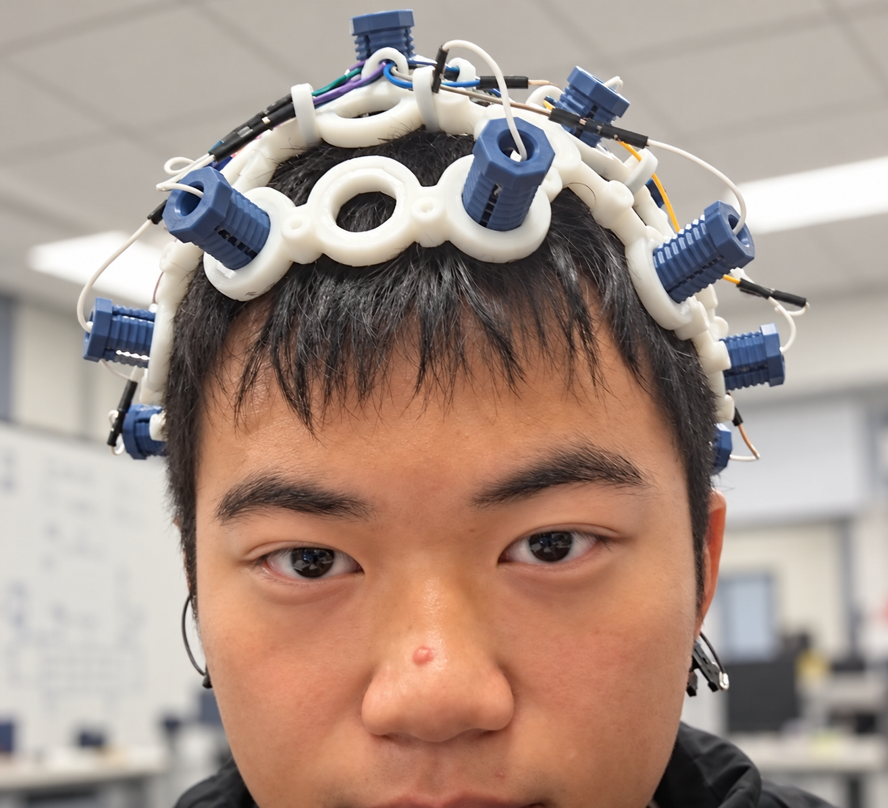
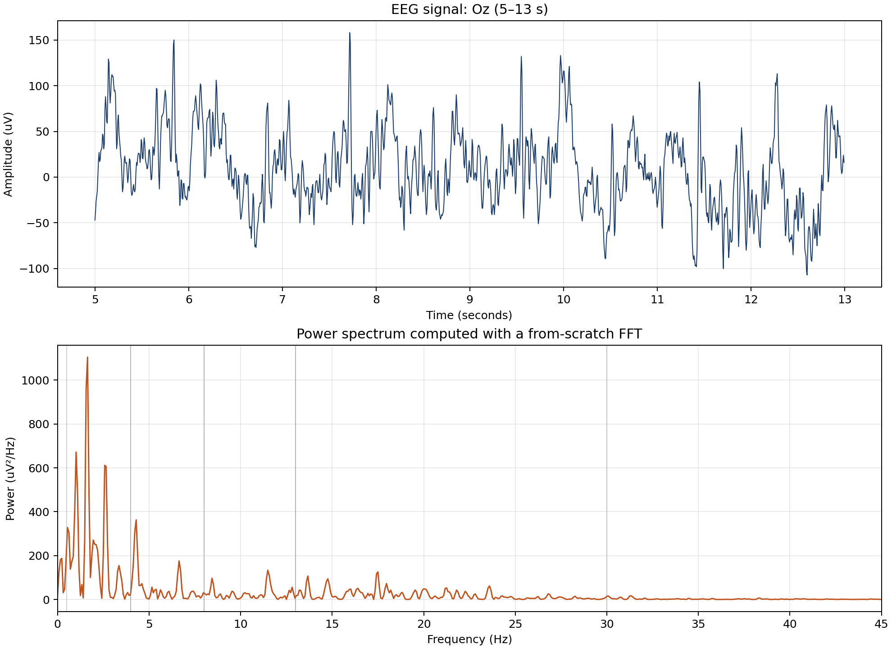

The question
An EEG shows voltage changing over time. The Fourier transform views the exact same signal in another way: it asks which frequencies contribute to it.
What does EEG measure?
Electroencephalography uses scalp electrodes to measure tiny changes in voltage caused by the combined activity of many neurons. It is not a direct recording of one neuron, a thought, or a diagnosis.
An EEG device samples the signal repeatedly. Those samples are the input to the discrete Fourier transform.
| Recording property | Value |
|---|---|
| EEG channels | 64 |
| Example electrode | Oz |
| Sampling rate | 160 Hz |
| Length | 61 s |
| Analyzed segment | 8 s |
Why Fourier analysis is appropriate: a short EEG segment can be modeled as a mixture of oscillations at different frequencies, plus noise and artifacts.
Where does an EEG signal come from?
EEG is not a recording of individual action potentials. At the scalp, it mainly reflects the summed, synchronized electrical activity of large populations of cortical neurons—especially the long, similarly oriented pyramidal neurons in the cerebral cortex.
Electrochemical origin
Each neuron maintains a membrane voltage, defined as \(V_m=V_{\text{inside}}-V_{\text{outside}}\), because ions such as \(\mathrm{Na}^+\), \(\mathrm{K}^+\), \(\mathrm{Cl}^-\), and \(\mathrm{Ca}^{2+}\) are distributed unevenly across its membrane. Synaptic input opens ion channels, causing currents in dendrites and cell bodies.
At scalp level, the most important contribution is usually the slow, coordinated postsynaptic current—not the brief action potential of one cell.
From current to voltage
In the quasi-static approximation used for EEG, current density contains passive conduction and biological source current:
Conservation of charge, \(\nabla\cdot\mathbf{J}=0\), gives:
In words: source currents from active neurons create an electric potential \(V\) that spreads through conductive tissue.
Why synchrony matters
Currents from randomly oriented or unsynchronized neurons tend to cancel at a distance. When many similarly oriented cortical neurons change together, their tiny contributions add enough to be measured at the scalp.
Why the signal has rhythms
Networks of neurons and connections can repeatedly increase and decrease their collective activity. These recurring patterns create the frequency components that the DFT reveals.
How an EEG device detects the signal

Physics connection: EEG is a measurement of electric potential produced by biological current flow. The Fourier analysis does not create these rhythms; it decomposes the measured voltage signal into its frequency components.
From Fourier series to the Fourier transform
For a periodic signal with period T, Fourier series represents the signal as a sum of harmonics:
The coefficient ck measures the contribution of frequency kω₀. Orthogonality of the complex waves lets us isolate it:
Now let the period grow without bound. The spacing between allowable frequencies is Δω = 2π/T. As T → ∞, Δω → 0: discrete frequency values become continuous, and the Fourier-series sum becomes an integral.
The big idea: the time-domain signal and frequency-domain spectrum are two descriptions of the same information.
How the Fourier transform applies to this EEG: sampling, the DFT, and the FFT
The continuous Fourier transform above explains the underlying idea. However, this EEG is not a continuous mathematical function inside the computer: the device recorded a voltage sample every 1/160 second. Therefore, the actual calculation applied to the file is the discrete Fourier transform (DFT).
Step 1: turn the continuous transform into a sum
Using ordinary frequency \(f\) in hertz, the continuous Fourier transform is \(X_c(f)=\int_{-\infty}^{\infty}x(t)e^{-i2\pi ft}\,dt\). Samples are separated by \(T_s=1/F_s\), so a Riemann-sum approximation over a finite recording is:
That is the key bridge: an integral becomes a sum because the EEG device gives us discrete samples.
Step 2: choose the DFT frequency grid
For a record of \(N\) samples, evaluate at equally spaced frequencies \(f_k=kF_s/N\). Substituting \(f_k\) and \(T_s=1/F_s\) makes the exponential \(e^{-i2\pi kn/N}\). Ignoring the constant scale \(T_s\) gives the usual DFT:
Each X[k] measures how much the sampled EEG resembles a sine/cosine wave at fk. For a real-valued EEG, the negative-frequency coefficients mirror the positive-frequency coefficients, so the plot keeps k = 0 through N/2.
For this EEG segment
N = 8 × 160 = 1280 samples
Frequency resolution: Δf = Fs/N = 160/1280 = 0.125 Hz
Nyquist frequency: Fs/2 = 80 Hz
So the DFT tests frequencies from 0 Hz up to 80 Hz, in steps of 0.125 Hz.
Why FFT?
A direct DFT takes about N² operations. The Cooley–Tukey FFT recursively separates even and odd samples, reducing the work to about N log₂N.
The FFT is not a different transform—it is a faster way to calculate the same DFT.
Step 3: prepare the finite EEG segment
A finite segment has edges. If its first and last values differ sharply, that artificial jump spreads energy across many frequencies, called spectral leakage. The program removes the average and applies a Hann window:
It applies the FFT to xw[n], then forms a one-sided power estimate from |X[k]|². The code normalizes by the sample rate and the window energy, doubles non-edge positive-frequency bins, and plots the result in µV²/Hz.
The recursive implementation pads 1280 samples to 2048 so its radix-2 FFT can split evenly. Zero-padding produces a denser-looking plotted grid (160/2048 Hz per displayed point), but it does not improve the true 0.125 Hz resolution determined by the original eight-second observation.
Applying it to a real EEG
The analysis selects eight seconds from electrode Oz. Because the recording is sampled at 160 Hz, this produces 1280 discrete numbers. It subtracts their average, applies a Hann window to reduce edge effects, then uses the FFT to calculate the DFT coefficients X[k]. Finally it plots the power |X[k]|² against the DFT-bin frequencies fk = kFs/N.

The lower plot has peaks at frequencies that were prominent in this segment. Standard EEG band names include delta (0.5–4 Hz), theta (4–8 Hz), alpha (8–13 Hz), beta (13–30 Hz), and gamma (30–80 Hz). The graph is a signal description, not a medical conclusion.
Build a signal, then reveal its frequencies
Change the two waves. The upper graph is their combined time-domain signal; the lower graph is its spectrum. The peaks appear at the frequencies you chose.